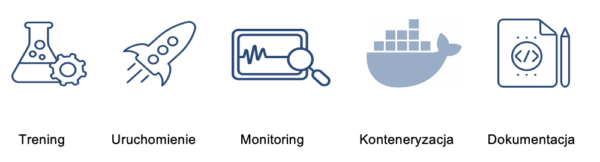

1.3 Warsztaty
Pracę na ćwiczeniach podzielimy na 5 etapów:
- Stworzenie komponentów umożliwiających
- trening
- uruchomienie
- i monitoring modeli
- Implementację tych komponentów w postaci kontenerów Docker (opcjonalnie: Kubernetes lub Dataiku)
- Opracowanie dokumentacji całej architektury.

W pracach wykorzystamy następujące narzędzia:
- Pakiet MLFlow
- Środowisko Docker/Kubeflow
- Platformę Dataiku.
Na końcową dokumentację złożą się:
- Opis problemu: Co i dlaczego modelujemy?
- Analiza potrzeb.
- Krótka charakterystyka organizacji, dla której trenujemy model (1 akapit)
- Prognozowana częstość dotrenowywania
- Złożoność obliczeniowa algorytmu
- Ilość i złożoność danych.
- Rekomendowana architektura (implementacja w diagrams.net z łączami do GitHub (artefakty i komponenty))
- Dokumentacja implementacji:
- Komponenty
- Artefakty
- Środowisko uruchomieniowe
- Dyskusja wyników (ekrany z poszczególnych faz):
- Dane
- Modelowanie
- Monitoring.